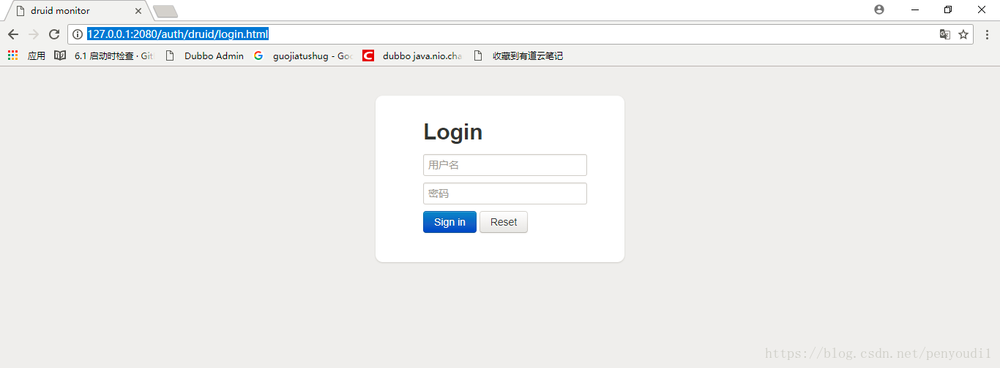
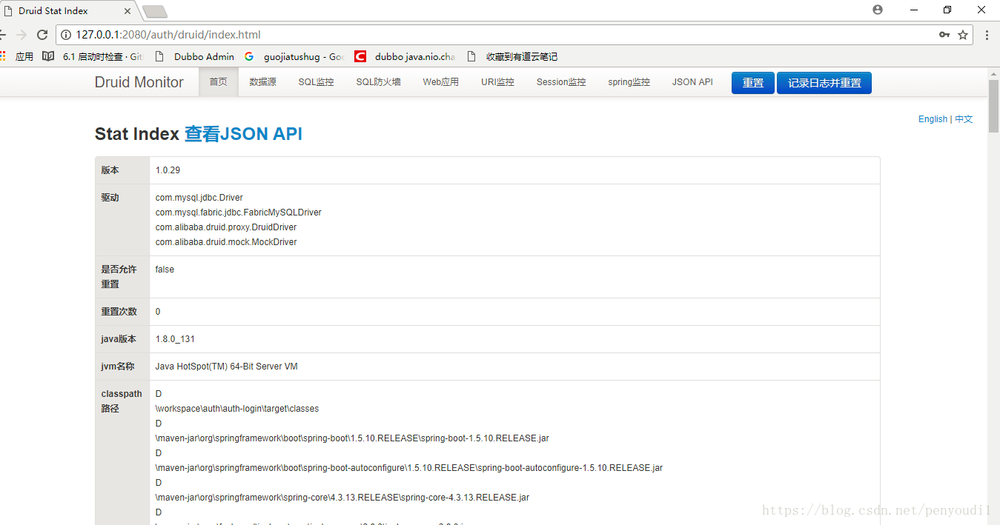

连接池配置既影响数据库访问，也决定监控、安全边界和故障排查体验。
历史工程档案 · Druid 1.1.10BACKGROUND
Druid 与项目背景
示例环境为 JDK 8、Spring Boot 1.5.10 与 Druid 1.1.10。DataSourceBuilder 包名、Servlet 注册方式和推荐配置会随版本变化。
Druid是阿里托管于 GitHub 的开源的数据库链接池工具，他封装提供并聚合了各种统计，通过简单的配置就可以实现sql防火墙和防注入功能，是当下最强大，功能最全的数据库连接池工具。
因项目需要，配置了连接池，现项目上线，特此记录下，方便以后使用。
相关环境版本：jdk版本1.8，springboot版本1.5.10，druid版本
DEPENDENCY
引入 Maven 依赖
<dependency>
<groupId>com.alibaba</groupId>
<artifactId>druid</artifactId>
<version>1.1.10</version>
</dependency>JAVA CONFIG
注册监控、过滤器与数据源
import javax.sql.DataSource;
import org.slf4j.Logger;
import org.slf4j.LoggerFactory;
import org.springframework.boot.autoconfigure.jdbc.DataSourceBuilder;
import org.springframework.boot.context.properties.ConfigurationProperties;
import org.springframework.boot.web.servlet.FilterRegistrationBean;
import org.springframework.boot.web.servlet.ServletRegistrationBean;
import org.springframework.context.annotation.Bean;
import org.springframework.context.annotation.Configuration;
import org.springframework.context.annotation.Primary;
import com.alibaba.druid.support.http.StatViewServlet;
import com.alibaba.druid.support.http.WebStatFilter;
/**
* ClassName: DruidConfiguration
* Description:
* @date 2018年7月20日
*/
@Configuration
public class DruidConfiguration {
private static final Logger logger = LoggerFactory.getLogger(DruidConfiguration.class);
@Bean
public ServletRegistrationBean druidServlet() {
logger.info("init Druid Servlet Configuration ");
ServletRegistrationBean servletRegistrationBean = new ServletRegistrationBean(new StatViewServlet(), "/druid/*");
// IP白名单
servletRegistrationBean.addInitParameter("allow", "192.168.2.25,127.0.0.1");
// IP黑名单(共同存在时，deny优先于allow)
servletRegistrationBean.addInitParameter("deny", "192.168.1.100");
//控制台管理用户
servletRegistrationBean.addInitParameter("loginUsername", "admin");
servletRegistrationBean.addInitParameter("loginPassword", "admin");
//是否能够重置数据 禁用HTML页面上的“Reset All”功能
servletRegistrationBean.addInitParameter("resetEnable", "false");
return servletRegistrationBean;
}
@Bean
public FilterRegistrationBean filterRegistrationBean() {
FilterRegistrationBean filterRegistrationBean = new FilterRegistrationBean(new WebStatFilter());
filterRegistrationBean.addUrlPatterns("/*");
filterRegistrationBean.addInitParameter("exclusions", "*.js,*.gif,*.jpg,*.png,*.css,*.ico,/druid/*");
return filterRegistrationBean;
}
@Bean //声明其为Bean实例
@Primary //在同样的DataSource中，首先使用被标注的DataSource
@ConfigurationProperties(prefix = "spring.datasource")
public DataSource datasource(){
return DataSourceBuilder.create().type(com.alibaba.druid.pool.DruidDataSource.class).build();
}
}三个bean依次为：Druid监控页面的配置(包含黑白名单)，过滤器的配置，和连接池的yml文件配置读取，加载
YAML CONFIG
配置连接池参数
spring:
datasource:
url: jdbc:mysql://10.200.200.6:3306/scauth?useUnicode=true&allowMultiQueries=true&characterEncoding=utf8&noAccessToProcedureBodies=true&zeroDateTimeBehavior=convertToNull
password:
username:
driver-class-name: com.mysql.jdbc.Driver
platform: mysql
# 下面为连接池的补充设置，应用到上面所有数据源中
type: com.alibaba.druid.pool.DruidDataSource
# 初始化大小，最小，最大
initialSize: 1
minIdle: 3
maxActive: 20
# 配置获取连接等待超时的时间
maxWait: 60000
# 配置间隔多久才进行一次检测，检测需要关闭的空闲连接，单位是毫秒
timeBetweenEvictionRunsMillis: 60000
# 配置一个连接在池中最小生存的时间，单位是毫秒
minEvictableIdleTimeMillis: 30000
validationQuery: select 'x'
testWhileIdle: true
testOnBorrow: false
testOnReturn: false
# 打开PSCache，并且指定每个连接上PSCache的大小
poolPreparedStatements: true
maxPoolPreparedStatementPerConnectionSize: 20
# 配置监控统计拦截的filters，去掉后监控界面sql无法统计，'wall'用于防火墙
filters: stat,wall,slf4j
# 通过connectProperties属性来打开mergeSql功能；慢SQL记录
connectionProperties: druid.stat.mergeSql=true;druid.stat.slowSqlMillis=5000
# 合并多个DruidDataSource的监控数据
#useGlobalDataSourceStat: trueDruid支持多数据源配置，不过上面的配置方式只是单数据源的，
MONITOR CONSOLE
访问 Druid 监控页面
就能看到登录页

输入账户/密码：admin/admin 登录成功，跳转首页。在此提示，登录账户密码可以不设置，不设置的话访问链接直接跳转首页

首页展示的是项目的概要包括驱动，路径， jdk 版本，引用的jar等。除此之外还有各种统计。特别要记住的是，Druid的统计不会持久存储，项目每次重启会清零所以如果有需要保存的数据 最好自己保存一份
MIGRATION & SOURCE
迁移说明与原始来源
本文由本地保存的 CSDN 正文迁移而来，保留原始实践步骤、代码与截图，并对标题层级、段落和版本提示进行了重新整理。
《Spring Boot 配置 Druid》，原发布于 2018-08-01。示例环境与结论应结合文章中的版本背景阅读。
查看 CSDN 原文 ↗让数据源配置具备监控与排查能力